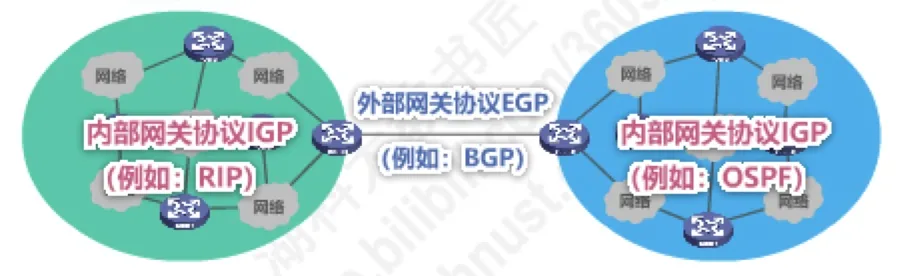
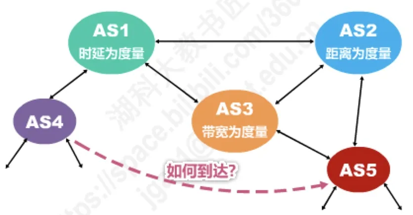
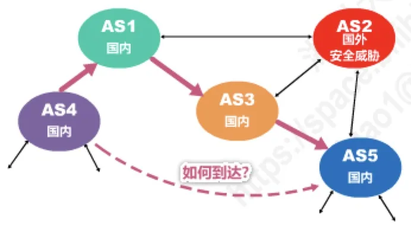
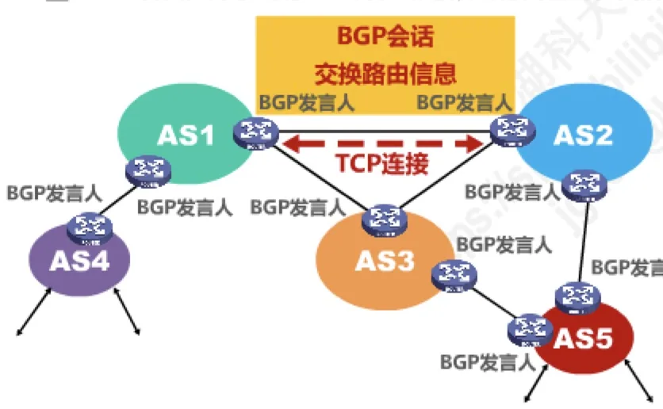
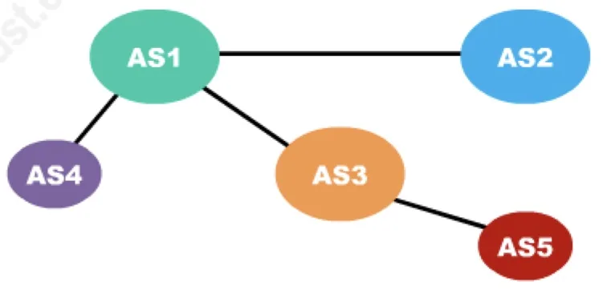
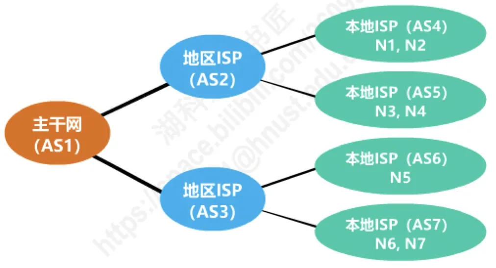
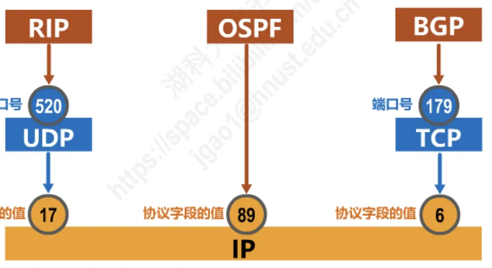

计算机通信与网络 · 第 4 章 网络层
4.6.4 边界网关协议BGP的基本工作原理
上一节的开放最短路径优先 OSPF 解决的是「一个自治系统内部」怎么选路，而因特网是成千上万个自治系统互连而成的，自治系统之间怎么走，靠的是另一种协议——边界网关协议 BGP（Border Gateway Protocol）。本节先给出一个关键结论：各个自治系统度量「代价」的口径并不相同，自治系统之间的路由还必须服从政治、经济、安全等策略，所以 BGP 只求找到一条能够到达目的网络、而且不兜圈子的较好路由，并不追求最佳路由；然后再依次讲 BGP 发言人、BGP 会话、网络可达性与路径向量，最后用 BGP-4 的四种报文和两道历年真题收口。
1. 从自治系统说起：内部网关协议与外部网关协议
4.6.1 节已经交代过，因特网采用分层次的路由选择协议：整个因特网被划分为许多较小的自治系统 AS（Autonomous System），路由选择也相应地分成两个层次。在一个自治系统内部，使用内部网关协议 IGP（Interior Gateway Protocol），例如路由信息协议 RIP（Routing Information Protocol）或开放最短路径优先 OSPF（Open Shortest Path First）；IGP 的任务是设法使分组在一个自治系统内尽可能有效地从源网络传输到目的网络，无需考虑自治系统外部其他方面的策略。而在不同的自治系统之间，使用外部网关协议 EGP（Exterior Gateway Protocol），例如本节要讲的边界网关协议 BGP。

2. 自治系统之间为什么找不到「最佳路由」
既然 IGP 能在自治系统内部找出「代价」最小的路由，为什么不能把同样的思路搬到自治系统之间？第一个原因是度量标准不统一。不同自治系统对路由「代价」的定义可能完全不同：有的以距离为度量，有的以带宽为度量，有的还会把费用算进来。图 2 中，AS1 以时延为度量，AS2 以距离为度量，AS3 以带宽为度量；从 AS4 出发要到达 AS5，有两条候选路径——路径 1 是 AS4→AS1→AS3→AS5，路径 2 是 AS4→AS1→AS2→AS5。两条路径的「代价」单位都不一样，根本没法放在一起比较。

于是就有了那句结论：没有统一的度量，何谈最佳路由。第二个原因是策略：自治系统之间的路由选择必须考虑相关策略，包括政治、经济、安全等因素。图 3 的例子很典型——AS2 位于国外，从它穿过的流量可能带来安全威胁，因此有的自治系统干脆不允许某些流量通过，有的自治系统则要求满足付费等条件才允许通过。这类判断与「距离最短」「带宽最大」无关，却直接决定了某条路由能不能用。

把这两个原因合起来，就是 BGP 的设计基调：BGP 只能是力求寻找一条能够到达目的网络且比较好的路由（不能兜圈子），而并非要寻找一条最佳路由。这句话是本节最常考的判断依据，后面讲的路径向量机制正是为「不兜圈子」服务的。
3. BGP 发言人、BGP 会话与 TCP 连接
BGP 把「交换路由信息」这件事交给自治系统里的少数几台路由器完成。在配置 BGP 时，每个自治系统的管理员要选择至少一个路由器作为该自治系统的「BGP 发言人（BGP speaker）」；规模较大的自治系统可以设置多个发言人，它们都代表本自治系统对外讲话。
不同自治系统的 BGP 发言人要交换路由信息，首先必须建立 TCP 连接，端口号为 179；然后在这条 TCP 连接上交换 BGP 报文，从而建立 BGP 会话（BGP session）。利用 BGP 会话交换的路由信息包括：增加新的路由、撤销过时的路由，以及报告出错的情况等。使用 TCP 连接交换路由信息的两个 BGP 发言人，彼此称为对方的邻站（neighbor）或对等站（peer）。
这里选择 TCP 而不是 UDP，是为了让路由信息可靠地、面向连接地送达：路由通告一旦丢失或出错，邻站就可能长时间停留在错误的路由上，把这些重传与差错控制交给 TCP 最省事——这也和 5.3 节比较 UDP 与 TCP 时讲过的分工一致。还要注意，BGP 发言人并不是只运行 BGP：它除了运行 BGP 外，还必须运行自己所在自治系统所使用的内部网关协议 IGP，例如 OSPF 或 RIP，对外用 BGP 讲话，对内用 IGP 了解本自治系统的网络情况。相邻的两个自治系统各自使用哪种 IGP 互不相干，一个可能用 OSPF，另一个可能用 RIP，BGP 只负责在它们之间传递自治系统层面的可达性信息。

4. 网络可达性与无回路的自治系统连通图
BGP 发言人之间交换的信息叫作网络可达性的信息，具体说就是「要到达某个网络，需要经过哪些自治系统」。每条路由通告都带着这样一串自治系统编号，称为路径向量（path vector）。
当 BGP 发言人互相交换了网络可达性的信息后，各 BGP 发言人就根据所采用的策略，从收到的路由信息中找出到达各自治系统的较好路由；这些路由合起来，构造出的是一个树形结构、不存在回路的自治系统连通图（图 5）。为什么要特别强调「不存在回路」？因为路径向量里明确列出了这条路径要经过哪些自治系统，一个自治系统只要发现自己的编号已经出现在通告的路径中，就可以拒绝这条路由，从而避免分组被绕来绕去地兜圈子。

5. BGP 适用于多级结构的因特网
把 BGP 放进真实的因特网拓扑里会看得更清楚。因特网是多级结构的：主干网、地区 ISP（Internet Service Provider）、本地 ISP 层层相接。图 6 中，主干网是 AS1，两个地区 ISP 分别是 AS2 和 AS3，地区 ISP 下面挂着若干本地 ISP（AS4～AS7），每个本地 ISP 又连接具体的网络 N1～N7。
以「如何到达 N1～N4」为例：AS2 的 BGP 发言人会通告「要到达 N1、N2、N3、N4 可经过 AS2」；AS1 的 BGP 发言人收到后，再向外通告「要到达 N1、N2、N3、N4 可沿路径（AS1, AS2）」。通告里的这一串自治系统编号，就是前面说的路径向量。假如 AS3 发现这条通告的路径中已经包含了 AS3 自己，那么它就不能采用这条路径，否则会兜圈子——这正是路径向量机制在起作用。

6. BGP-4 的四种报文
BGP 会话上跑的就是 BGP 报文。BGP-4 共有四种报文，各自分工明确：
| 报文 | 作用 |
|---|---|
| OPEN（打开）报文 | 用来与相邻的另一个 BGP 发言人建立关系，使通信初始化 |
| UPDATE（更新）报文 | 用来通告某一路由的信息，以及列出要撤销的多条路由 |
| KEEPALIVE（保活）报文 | 用来周期性地证实邻站的连通性 |
| NOTIFICATION（通知）报文 | 用来发送检测到的差错 |
把这四种报文的作用串起来，正好对应一次 BGP 会话的运转过程：先用 OPEN 与邻站建立关系并完成初始化，再用 UPDATE 通告新路由或撤销过时路由，会话空闲时靠 KEEPALIVE 周期性证实邻站还在，一旦检测到差错就发 NOTIFICATION 通知对方。
注记：本节所讲的 BGP 就是目前广泛使用的 BGP-4，其现行规范是 2006 年发布的 RFC 4271（取代了早期的 RFC 1771）；因特网上运行的主要是这一版本。
7. 两道历年真题
BGP 的考点集中在「谁的报文由谁承载」上，原讲义用两道真题演示了这两种问法。
（1）2013 年题 47（3）：自治系统之间用什么协议交换路由信息
题目：R1 与 R2 之间利用哪个路由协议交换路由信息？该路由协议的报文被封装到哪个协议的分组中进行传输？题图给出了分别属于 AS1 和 AS2 的两台路由器 R1、R2，以及 153.14.5.0/25、194.17.20.0/25 等网段。
解析：R1 和 R2 分别位于两个不同的自治系统 AS1 和 AS2 中；自治系统之间需要使用外部网关协议 EGP 这一类协议，具体为边界网关协议 BGP，目前使用最多的版本是 BGP-4；BGP-4 报文被封装在 TCP 报文段中进行传输。
（2）2017 年题 37：直接封装 RIP、OSPF、BGP 报文的协议分别是
题目：直接封装 RIP、OSPF、BGP 报文的协议分别是——A. TCP、UDP、IP；B. TCP、IP、UDP；C. UDP、TCP、IP；D. UDP、IP、TCP。答案是 D。
解析：把三种路由协议各自的下层协议对上号就不会错。RIP 报文封装在 UDP 用户数据报中，UDP 端口号为 520；OSPF 报文既不使用 TCP 也不使用 UDP，而是直接封装在 IP 数据报中，IP 首部协议字段的值为 89；BGP 报文封装在 TCP 报文段中，TCP 端口号为 179。UDP 自己还要由 IP 承载，所以 RIP 报文穿过 IP 层时，协议字段的值为 17。

| 路由协议 | 直接承载它的协议 | 关键取值 |
|---|---|---|
| 路由信息协议 RIP | UDP 用户数据报 | UDP 端口号 520；UDP 由 IP 承载，IP 协议字段值 17 |
| 开放最短路径优先 OSPF | IP 数据报（直接封装） | IP 首部协议字段值 89 |
| 边界网关协议 BGP | TCP 报文段 | TCP 端口号 179 |
本节小结
- 因特网分层次选路：自治系统内部使用内部网关协议 IGP（例如 RIP、OSPF），自治系统之间使用外部网关协议 EGP，本节的主角是边界网关协议 BGP（目前版本为 BGP-4）；
- 自治系统之间的「代价」没有统一度量，还必须考虑政治、经济、安全等策略，所以 BGP 只求一条能到达目的网络且不兜圈子的较好路由，不追求最佳路由；
- 每个自治系统至少选一台路由器作为 BGP 发言人；不同自治系统的发言人先建立 TCP 连接（端口号 179），在其上建立 BGP 会话，彼此互称邻站或对等站；发言人除了运行 BGP，还必须运行本自治系统的 IGP；
- BGP 交换的是网络可达性信息，通告中携带路径向量（要经过的一系列自治系统），据此构造出树形结构、不存在回路的自治系统连通图；
- BGP-4 有 OPEN、UPDATE、KEEPALIVE、NOTIFICATION 四种报文，分别用于建立关系并初始化、通告与撤销路由、周期性证实邻站连通性、报告检测到的差错；
- 封装关系是常考点：RIP 由 UDP（端口 520）承载，OSPF 直接封装在 IP 数据报中（协议字段 89），BGP 由 TCP（端口 179）承载。